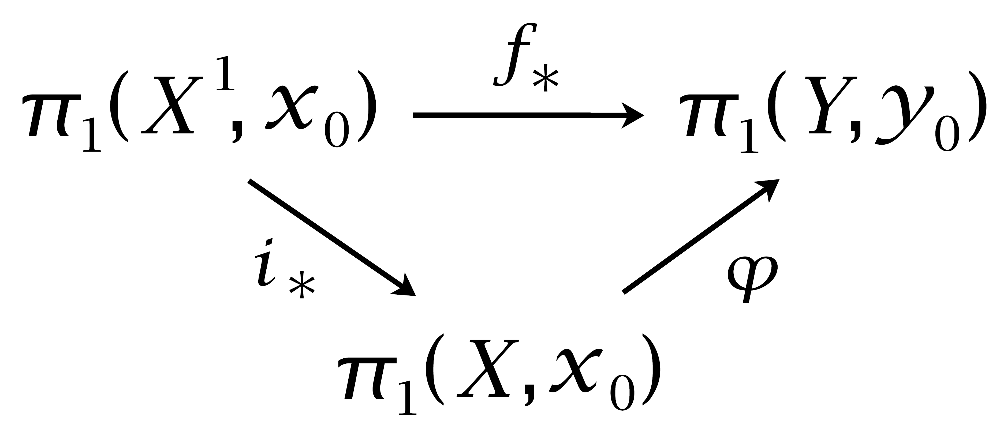

1.B. K(G,1) Spaces and Graphs of Groups#
In this section we introduce a class of spaces whose homotopy type depends only on their fundamental group. These spaces arise many places in topology, especially in its interactions with group theory.
A path-connected space whose fundamental group is isomorphic to a given group \(G\) and which has a contractible universal covering space is called a \(\mathbf{K(G,1)\) space. The ‘\(1\)’ here refers to \(\pi_1\). More general \(K(G,n)\) spaces are studied in §4.2. All these spaces are called Eilenberg-MacLane spaces, though in the case \(n=1\) they were studied by Hurewicz before Eilenberg and MacLane took up the general case. Here are some examples:
Example 1B.1. \(S^1\) is a \(K(\mathbb{Z}, 1)\). More generally, a connected graph is a \(K(G,1)\) with \(G\) a free group, since by the results of §1.A its universal cover is a tree, hence contractible.
Example 1B.2. Closed surfaces with infinite \(\pi_1\), in other words, closed surfaces other than \(S^2\) and \(\mathbb{R}P^2\), are \(K(G,1)\)’s. This will be shown in Example 1B.14 below. It also follows from the theorem in surface theory that the only simply-connected surfaces without boundary are \(S^2\) and \(\mathbb{R}^2\), so the universal cover of a closed surface with infinite fundamental group must be \(\mathbb{R}^2\) since it is noncompact. Nonclosed surfaces deformation retract onto graphs, so such surfaces are \(K(G,1)\)’s with \(G\) free.
Example 1B.3. The infinite-dimensional projective space \(\mathbb{R}P^\infty\) is a \(K(\mathbb{Z}_2, 1)\) since its universal cover is \(S^\infty\), which is contractible. To show the latter fact, a homotopy from the identity map of \(S^\infty\) to a constant map be constructed in two stages as follows. First, define \(f_t: \mathbb{R}^\infty \rightarrow \mathbb{R}^\infty\) by \(f_t(x_1,x_2,\cdots) = (1-t)(x_1,x_2,\cdots)+t(0,x_1,x_2,\cdots)\). This takes nonzero vectors to nonzero vectors for all \(t \in [0,1], so f_t / |f_t|\) gives a homotopy from the identity map of \(S^\infty\) to the map \((x_1,x_2,\cdots) \mapsto (0,x_1,x_2,\cdots)\). Then a homotopy from this map to a constant map is given by \(g_t / |g_t|\) where \(g_t(x_1,x_2,\cdots)=(1-t)(0,x_1,x_2,\cdots) +t(1,0,0,\cdots)\).
Example 1B.4. Generalizing the preceding example, we can construct a \(K(\mathbb{Z}_m,1)\) as an infinite-dimensional lens space \(S^\infty / \mathbb{Z}_m\), where \(\mathbb{Z}_m\) acts on \(S^\infty\), regarded as the unit sphere in \(\mathbb{C}^\infty\), by scalar multiplication by \(m^{th}\) roots of unity, a generator of this action being the map \((z_1,z_2,\cdots) \mapsto e^{2\pi i/m}(z_1,z_2,\cdots)\). It is not hard to check that this is a covering space action.
Example 1B.5. A product \(K(G,1) \times K(H,1)\) is a \(K(G \times H,1)\) since its universal cover is the product of the universal covers of \(K(G,1)\) and \(K(H,1)\). By taking products of circles and infinite-dimensional lens spaces we therefore get \(K(G,1)\)’s for arbitrary finitely generated abelian groups \(G\). For example the \(n\)-dimensional torus \(T^n\), the product of \(n\) circles, is a \(K(\mathbb{Z}^n, 1)\).
Example 1B.6. For a closed connected subspace \(K\) of \(S^3\) that is nonempty, the complement \(S^3 - K\) is a \(K(G,1)\). This is a theorem in \(3\)-manifold theory, but in the special case that \(K\) is a torus knot the result follows from our study of torus knot complements in Examples 1.24 and 1.35. Namely, we showed that for \(K\) the torus knot \(K_{m,n}\) there is a deformation retraction of \(S^3-K\) onto a certain \(2\)-dimensional complex \(X_{m,n}\) having contractible universal cover. The homotopy lifting property then implies that the universal cover of \(S^3-K\) is homotopy equivalent to the universal cover of \(X_{m,n}\), hence is also contractible.
Example 1B.7. It is not hard to construct a \(K(G,1)\) for an arbitrary group \(G\), using the notion of a \(\Delta -complex\) defined in §2.1. Let \(EG\) be the \(\Delta\)-complex whose \(n\)-simplices are the ordered \((n+1)\)-tuples \([g_0,\cdots,g_n]\) of elements of \(G\). Such an \(n\)-simplex attaches to the \((n-1)\)-simplices \([g_0,\cdots, \hat{g}_i,\cdots,g_n]\) in the obvious way, just as a standard simplex attaches to its faces. (The notation \(\hat{g}_i\) means that this vertex is deleted.) The complex \(EG\) is contractible by the homotopy \(h_t\) that slides each point \(x \in [g_0, \cdots, g_n]\) along the line segment in \([e,g_0,\cdots,g_n]\) from \(x\) to the vertex \([e]\), where \(e\) is the identity element of \(G\). This is well-defined in \(EG\) since when we restrict to a face \([g_0, \cdots, \hat{g}_i, \cdots, g_n]\) we have the linear deformation to \([e]\) in \([e,g_0,\cdots,\hat{g}_i, \cdots, g_n]\). Note that \(h_t\) carries \([e]\) around the loop \([e,e]\), so \(h_t\) is not actually a deformation retraction of \(EG\) onto \([e]\).
The group \(G\) acts on \(EG\) by left multiplication, an element \(g \in G\) taking the simplex \([g_0,\cdots, g_n]\) linearly onto the simplex \([gg_0, \cdots, gg_n]\). Only the identity \(e\) takes any simplex to itself, so by an exercise at the end of this section, the action of \(G\) on \(EG\) is covering space action. Hence the quotient map \(EG \rightarrow EG/G\) is the universal cover of the orbit space \(BG=EG/G\), and \(BG\) is a \(K(G,1)\).
Since \(G\) acts on \(EG\) by freely permuting simplices, \(BG\) inherits a \(\Delta\)-complex structure from \(EG\). The action of \(G\) on \(EG\) identifies all the vertices of \(EG\), so \(BG\) has just one vertex. To describe the \(\Delta\)-complex structure on \(BG\) explicitly, note first that every \(n\)-simplex of \(EG\) can be written uniquely in the form
The image of this simplex in \(BG\) may be denoted unambiguously by the symbol \([g_1|g_2|\cdots |g_n]\). In this ‘bar’ notation the \(g_i\)’s and their ordered products can be used to label edges, viewing an edge label as the ratio between the two labels on the vertices at the endpoints of the edge, as indicated in the figure. With this notation, the boundary of a simplex \([g_1|\cdots | g_n]\) of \(BG\) consists of the simplices \([g_2|\cdots| g_n],\,[g_1|\cdots|g_{n-1}]\), and \([g_1|\cdots |g_ig_{i+1}|\cdots|g_n]\) for \(i=1,\cdots ,n-1\).
This construction of a \(K(G,1)\) produces a rather large space, since \(BG\) is always infinite-dimensional, and if \(G\) is infinite, \(BG\) has an infinite number of cells in each positive dimension. For example, \(B\mathbb{Z}\) is much bigger than \(S^1\), the most efficient \(K(\mathbb{Z},1)\). On the other hand, \(BG\) has the virtue of being functorial: A homomorphism \(f:G \rightarrow H\) induces a map \(Bf:BG \rightarrow BH\) sending a simplex \([g_1 | \cdots g_n]\) to the simplex \([f(g_1)|\cdots |f(g_n)]\). A different construction of a \(K(G,1)\) is given in §4.2. Here one starts with any \(2\)-dimensional complex having fundamental group \(G\), for example the complex \(X_G\) associated to a presentation of \(G\), and then one attaches cells of dimension \(3\) and higher to make the universal cover contractible without affecting \(\pi_1\). In general, it is hard to get any control on the number of higher-dimensional cells needed in this construction, so it too can be rather inefficient. Indeed, finding an efficient \(K(G,1)\) for a given group \(G\) is often a difficult problem.
It is a curious and almost paradoxical fact that if \(G\) contains any elements of finite order, then every \(K(G,1)\) CW complex must be infinite-dimensional. This is shown in Proposition 2.45. In particular the infinite-dimensional lens space \(K(\mathbb{Z}_m, 1)\)’s in Example 1B.4 cannot be replaced by any finite-dimensional complex.
In spite of the great latitude possible in the construction of \(K(G,1)\)’s, there is a very nice homotopical uniqueness property that accounts for much of the interest in \(K(G,1)\)’s:
Having a unique homotopy type of \(K(G,1)\)’s associated to each group \(G\) means that algebraic invariants of spaces that depend only on homotopy type, such as homology and cohomology groups, become invariants of groups. This has proved to be a quite fruitful idea, and has been much studied both from the algebraic and topological viewpoints. The discussion following Proposition 2.45 gives a few references.
The preceding theorem will follow easily from:
Proposition 1B.9. Let \(X\) be a connected CW complex and let \(Y\) be a \(K(G,1)\). Then every homomorphism \(\pi_1(X,x_0)\rightarrow \pi_1(Y,y_0)\) is induced by a map \((X,x_0) \rightarrow (Y,y_0)\) that is unique up to homotopy fixing \(x_0\).
To deduce the theorem from this, let \(X\) and \(Y\) be CW complex \(K(G,1)\)’s with isomorphic fundamental groups. The proposition gives maps \(f:(X,x_0) \rightarrow (Y,y_0)\) and \(g:(Y,y_0) \rightarrow (X,x_0)\) inducing inverse isomorphisms \(\pi_1(X,x_0) \approx \pi_1(Y,y_0)\). Then \(fg\) and \(gf\) induce the identity on \(\pi_1\) and hence are homotopic to the identity maps.
{kind=link}
Proof of 1B.9: Let us first consider the case that \(X\) has a single \(0\)-cell, the basepoint \(x_0\). Given a homomorphism \(\varphi: \pi_1(X,x_0) \rightarrow \pi_1(Y,y_0)\), we begin the construction of a map \(f:(X,x_0) \rightarrow (Y,y_0)\) with \(f_* = \varphi\) by setting \(f(x_0)=y_0\). Each \(1\)-cell \(e^1_\alpha\) of \(X\) has closure a circle determining an element \([e^1_\alpha]\in \pi_1(X,x_0)\), and we let \(f\) on the closure of \(e^1_\alpha\) be a map representing \(\varphi([e^1_\alpha])\). If \(i:X^1 \hookrightarrow X\) denotes the inclusion, then \(\varphi i_* = f_*\) since \(\pi_1(X^1,x_0)\) is generated by the elements \([e^1_\alpha]\).
To extend \(f\) over a cell \(e^2_\beta\) with attaching map \(\psi_\beta : S^1 \rightarrow X^1\), all we need is for the composition \(f \psi_\beta\) to be nullhomotopic. Choosing a basepoint \(s_0 \in S^1\) and a path in \(X^1\) from \(\psi_\beta (s_0)\) to \(x_0,\, \psi_\beta\) determines an element \([\psi_\beta] \in \pi_1(X^1, x_0)\), and the existence of a nullhomotopy of \(f\psi_\beta\) is equivalent to \(f_*([\psi_\beta])\) being zero in \(\pi_1(Y,y_0)\). We have \(i_*([\psi_\beta])=0\) since the cell \(e^2_\beta\) provides a nullhomotopy of \(\psi_\beta\) in \(X\). Hence \(f_*([\psi_\beta])=\varphi i_*([\psi_\beta])=0\), and so \(f\) can be extended over \(e^2_\beta\).
Extending \(f\) inductively over cells \(e^n_\gamma\) with \(n>2\) is possible since the attaching maps \(\psi_\gamma : S^{n-1} \rightarrow X^{n-1}\) have nullhomotopic compositions \(f\psi_\gamma : S^{n-1} \rightarrow Y\). This is because \(f\varphi_\gamma\) lifts to the universal cover of \(Y\) if \(n>2\), and this cover is contractible by hypothesis, so the lift of \(f \varphi_\gamma\) is nullhomotopic, hence also \(f\varphi_\gamma\) itself.
Turning to the uniqueness statement, if two maps \(f_0,f_1:(X,x_0) \rightarrow (Y,y_0)\) induce the same homomorphism on \(\pi_1\), then we see immediately that their restrictions to \(X^1\) are homotopic, fixing \(x_0\). To extend the resulting map \(X^1 \times I \cup X \times \partial I \rightarrow Y\) over the remaining cells \(e^n \times (0,1)\) of \(X \times I\) we can proceed just as in the preceding paragraph since these cells have dimension \(n+1 >2\). Thus we obtain a homotopy \(f_t:(X,x_0)\rightarrow (Y,y_0)\), finishing the proof in the case that \(X\) has a single \(0\)-cell.
The case that \(X\) has more than one \(0\)-cell can be treated by a small elaboration on this argument. Choose a maximal tree \(T \subset X\). To construct a map \(f\) realizing a given \(\varphi\), begin by setting \(f(t)=y_0\). Then each edge \(e^1_\alpha\) in \(X-T\) determines an element \([e^1_\alpha] \in \pi_1(X,x_0)\), and we let \(f\) on the closure of \(e^1_\alpha\) be a map representing \(\varphi([e^1_\alpha])\). Extending \(f\) over higher-dimensional cells then proceeds just as before. Constructing a homotopy \(f_t\) joining two given maps \(f_0\) and \(f_1\) with \(f_{0*}=f_{1*}\) also has an extra step. Let \(h_t:X^1 \rightarrow X^1\) be a homotopy starting with \(h_0=\mathbb{1}\) and restricting to a deformation retraction of \(T\) onto \(x_0\). (It is easy to extend such a deformation retraction to a homotopy defined on all of \(X^1\).) We can construct a homotopy from \(f_0 | X^1\) to \(f_1|X^1\) by first deforming \(f_0|X^1\) and \(f_1|X^1\) to take \(T\) to \(y_0\) by composing with \(h_t\), then applying the earlier argument to obtain a homotopy between the modified \(f_0|X^1\) and \(f_1|X^1\). Having a homotopy \(f_0|X^1 \simeq f_1|X^1\) we extend this over all of \(X\) in the same way as before. ◻
The first part of the preceding proof also works for the \(2\)-dimensional complexes \(X_G\) associated to presentations of groups. Thus every homomorphism \(G \rightarrow H\) is realized as the induced homomorphism of some map \(X_G \rightarrow X_H\). However, there is no uniqueness statement for this map, and it can easily happen that different presentations of a group \(G\) give \(X_G\)’s that are not homotopy equivalent.
Graphs of Groups#
As an illustration of how \(K(G,1)\) spaces can be useful in group theory, we shall describe a procedure for assembling a collection of \(K(G,1)\)’s together into a \(K(G,1)\) for a larger group \(G\). Group-theoretically, this gives a method for assembling smaller groups together to form a larger group, generalizing the notion of free products.
Let \(\Gamma\) be a graph that is connected and oriented, that is, its edges are viewed as arrows, each edge having a specified direction. Suppose that at each vertex \(v\) of \(\Gamma\) we place a group \(G_v\) and along each edge \(e\) of \(\Gamma\) we put a homomorphism \(\varphi_e\) from the group at the tail of the edge to the group at the head of the edge. We call this data a graph of groups. Now build a space \(B\Gamm\) by putting the space :maht:`BG_v` from Example 1B.7 at each vertex \(v\) of \(\Gamma\) and then filling in a mapping cylinder of the map \(B\varphi_e\) along each edge \(e\) of \(\Gamma\), identifying the two ends of the mapping cylinder with the two \(BG_v\)’s at the ends of \(e\). The resulting space \(B\Gamma\) is then a CW complex since the maps \(B\varphi_e\) take \(n\)-cells homeomorphically onto \(n\)-cells. In fact, the cell structure on \(B\Gamma\) can be canonically subdivided into a \(\Delta-complex\) structure using the prism construction from the proof of Theorem 2.10, but we will not need to do this here.
More generally, instead of \(BG_v\) one could take any CW complex \(K(G_v,1)\) at the vertex \(v\), and then along edges put mapping cylinders of maps realizing the homomorphisms \(\varphi_e\). We leave it for the reader to check that the resulting space \(K\Gamma\) is homotopy equivalent to the \(B\Gamma\) constructed above.
Example 1B.10. Suppose \(\Gamma\) consists of one central vertex with a number of edges radiating out from it, and the group \(G_v\) at this central vertex is trivial, hence also all the edge homomorphisms. Then van Kampen’s theorem implies that \(\pi_1(K\Gamma)\) is the free product of the groups at all the outer vertices.
In view of this example, we shall call \(\pi_1(K\Gamma)\) for a general graph of groups \(\Gamma\) the graph product of the vertex groups \(G_v\) with respect to the edge homomorphisms \(\varphi_e\). The name for \(\pi_1(K\Gamma)\) that is generally used in the literature is the rather awkward phrase, ‘the fundamental group of the graph of groups’.
Here is the main result we shall prove about graphs of groups:
Before giving the proof, let us look at some interesting special cases:
Example 1B.12: Free products with Amalgamation. Suppose the graph of groups is \(A \leftarrow C \rightarrow B\), with the two maps monomorphisms. One can regard this data as a specifying embeddings of \(C\) as subgroups of \(A\) and \(B\). Applying van Kampen’s theorem to the decomposition of \(K\Gamma\) into its two mapping cylidners, we see that \(\pi_1(K\Gamma)\) is the quotient of \(A{\Large *}B\) obtained by identifying the subgroup \(C \subset A\) with the subgroup \(C \subset B\). The standard notation for this group is \(A{\Large *}_C B\), the free product of \(A\) and \(B\) amalgamated along the subgroup \(C\). According to the theorem, \(A {\Large *}_C B\) contains both \(A\) and \(B\) as subgroups.
For example, a free product with amalgamation \(\mathbb{Z} {\Large *}_\mathbb{Z} \mathbb{Z}\) can be realized by mapping cylinders of the maps \(S^1 \leftarrow S^1 \rightarrow S^1\) that are \(m\)-sheeted and \(n\)-sheeted covering spaces, respectively. We studied this case in Examples 1.24 and 1.35 where we showed that the complex \(K\Gamma\) is a deformation retract of the complement of a torus knot in \(S^3\) if \(m\) and \(n\) are relatively prime. It is a basic result in \(3\)-manifold theory that the complement of every smooth knot in \(S^3\) can be built up by iterated graph of groups constructions with injective edge homomorphisms, starting with free groups, so the theorem implies that these knot complements are \(K(G,1)\)’s. Their universal covers are all \(\mathbb{R}^3\), in fact.
Example 1B.13: HNN Extensions. Consider a graph of groups \(C \mathrel{\substack {\varphi \\ \longrightarrow\\ \longrightarrow\\ \psi}} A\) with \(\varphi\) and \(\psi\) both monomorphisms.